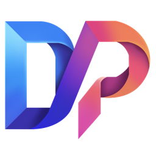

はじめに基準を測る
マイクを許可すると、最初の30秒の音量から基準値を測定。落ち着いて勉強を始められる状態で測ります。場所を変えたら、新しい学習セッションで測り直せます。

DOPASTAPro 体験するFOCUS. RECALL. CONNECT.
「やらなきゃ」を「もう少しやりたい」へ
集中も、復習も、やりきった瞬間も。
学びをつなぐ、DOPASTA Pro。
NOT JUST A TIMER.
机に向かう。ひとつ覚える。
昨日の自分を、少し超える。
その繰り返しを、楽しめるように。
DOPASTA Proは、集中と復習をひとつにつなぐ学習SNS。
自分のペースで学び、積み重ねを確かめながら、次の一歩へ。
01 — FOCUS
25分だけ、深く。あるいは、気のすむまで。
ポモドーロ・ストップウォッチ・タイマーから、その日の自分に合うリズムを。
ひと区切りが、次の集中をつくる。
02 — RECALL
学習の締めくくりは、4択クイズ。フラッシュカードは回答に応じて次の復習時期を調整。自分だけの問題集が、学びの続きをつくります。
「集中する」を英語で？
答えを選んで、思い出す感覚を。
EVERY SESSION COUNTS.
学習の終わりを、色とことばで祝福。
学習時間と集中度の振り返りが、あなたの一歩を記録します。
集中度は中断回数・自己評価・任意の環境音評価から算出する、アプリ独自の目安です。スコアと環境音チェックについて ↗
03 — CONNECT 開発中
仲間の「勉強を始めた」が、机に向かうきっかけになる。チーム内の競争も、チーム同士の対戦も。学びを共有する体験を目指しています。
チーム対戦・通知・チャットは現在ブラウザ内のデモです。アカウント作成やユーザー間の共有は、今後の対応を予定しています。
それぞれの時間が、チームの力に。
MAKE IT YOUR ROUTINE.
復習したい問題と4つの選択肢を、手動またはCSVで登録。
計測方法と時間を選んでスタート。いま取り組むことに集中。
終了クイズに答え、集中度を自己評価。学習記録を次の一歩へ。
A SMALL START. A NEW ROUTINE.
まずはこのページで、4択クイズの感覚を体験。
アプリの公開先は、準備が整い次第ご案内します。
DOPASTA Pro — アプリ公開準備中
YOUR SPACE. YOUR FOCUS.
静かな部屋も、いつものカフェも。完全な静寂だけが、集中の正解とは限りません。
環境音チェックは、その日の学習場所に合わせた振り返りをサポートします。
マイクを許可すると、最初の30秒の音量から基準値を測定。落ち着いて勉強を始められる状態で測ります。場所を変えたら、新しい学習セッションで測り直せます。
基準との差を「最適・普通・うるさすぎ」で表示。標準の判定幅は、基準から＋5 dBまでが最適、＋15 dBまでが普通、それ以上がうるさすぎです。
会話などで周囲の音が大きくなった場合、基準＋5 dBを超えた音量の平均と、大きな音が続いた割合に応じて環境音の評価を減点します。会話の内容を判別する機能ではありません。
一時停止の回数による継続度と、学習終了時の自己評価に、任意の環境音評価を組み合わせます。環境音の比重は最大20%。測定しない場合や測定時間が足りない場合は、環境音を評価に含めません。
音声は録音・送信せず、音量の集計値だけを利用します。このスコアや「最適」の表示はアプリ独自の目安で、実際の集中力を測定・保証するものではありません。
QUESTIONS & ANSWERS
タイマー・終了クイズ・フラッシュカード・学習記録を組み合わせた新時代の学習プラットフォームです。仲間と学びを共有する学習SNSとして開発しています。
スマートフォン・タブレット・PCのブラウザに合わせた画面設計です。スリープやバックグラウンド動作によって、タイマー音などの動作が制限される場合があります。
現在のアプリは使用中のブラウザに保存します。端末間の同期は未対応です。ブラウザの保存データを削除すると、学習記録や登録問題も削除されます。
現在はブラウザ内で動作するデモです。チームチャットでは目標や一言を共有する画面を体験できます。別のユーザーと実際に対戦したり、メッセージを共有したりする機能は準備中です。
環境音の測定は任意です。利用する場合のみマイクの許可が必要です。音声そのものは録音・送信せず、音量の集計値を振り返りの目安にします。最初の30秒で、その場所の音量を基準として測定します。